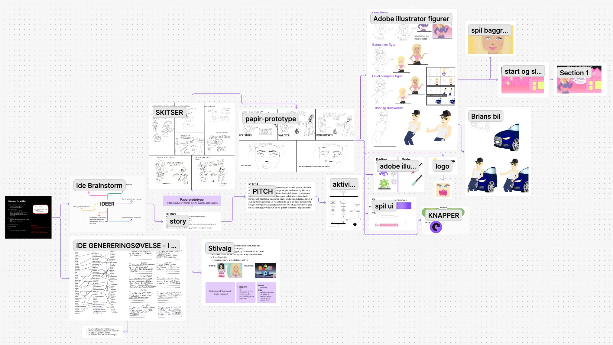

Tema 4
Grundlæggende animation
I tema 4 blev jeg introduceret til at bruge JavaScript i min kodning for at skabe dynamiske websites. Som
en del af
forløbet udviklede jeg et spil ved hjælp af CSS-animationer og JavaScript.
Udover kodningen lærte jeg at arbejde i Adobe Illustrator, hvor jeg designede de grafiske elementer til
spillet, såsom
UI-komponenter, figurer og baggrunde.
For at visualisere spillets struktur og interaktive flow anvendte jeg både statemachine-diagrammer og
aktivitetsdiagrammer.
Proces
Processen i dette tema bestod af processarbejde i Figjam og Figma. Her samlede jeg al dokumentation, lige fra idegenerering til de endelige tegninger fra Adobe illustrator.
Se figjam Her er lidt eksempler af processen med skitser og illustrationer af figurelemnterne. For at skildre spillets gang lavede jeg også en papirsprototype:
Se papirsprototypeKode
Jeg lærte hvordan Javascript er bygget op, som minder om en kædereaktion. Jeg benyttede mig meget af
consol-log, for at
finde fejl i koden.
Nedenunder kan i se hvordan koden i javascript hænger sammen som en kædereaktion:
Udover at lære javascript, lærte jeg også at sætte billeder og figurer ind via CSS.
Så jeg benyttede mig af ID i HTML dokumentet for at kunne snakke til dem i CSS.